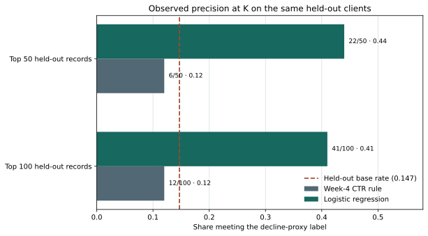
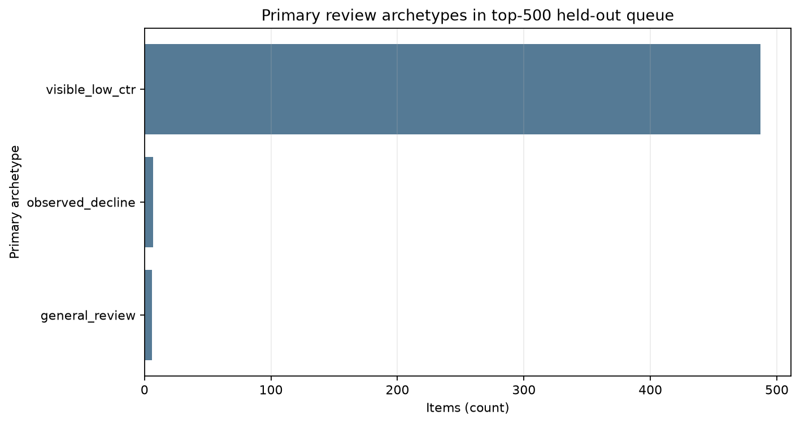

01 · Question
A ranking question, not a refresh-effect claim
Among client-content records with at least 100 first-half impressions in March 2026, do first-half search features rank records that meet a second-half impressions-decline proxy above a Week-4 CTR review rule when entire clients are held out?
The decision this study can inform is whether a small, human-reviewed triage experiment is worth evaluating. It cannot determine whether a particular page should be edited, or whether an edit would cause recovery.
Context from the March 2026 FlyRank report. The report describes differences in mean word count and page age between growing and declining groups (p. 6) and reports a 7.88:1 growth-to-decline ratio in its 31-90-day freshness band (p. 9). Its trend labels are contemporaneous, and the reported 283:1 ratio in the 361+ day band depends on one declining page.
Constructive methodology questions follow: could a prospective label and within-brand checks distinguish description from prediction for the first finding? Could counts and uncertainty by brand, plus a prospective comparison, address the sparse freshness tail and selection into refresh? These observations motivate questions; they are not causal evidence that refresh timing produces growth. The Week-6 validation audit documents the questions in more detail.
02 · Data
A large release, one monthly partition
The source was the gated production warehouse release v20260703, available through the FlyRank internship dataset repository. Its daily fact table contains 78,835,655 report-date by client by content rows from 2025-01-27 through 2026-06-30. That is the size and span of the release table, not the amount analyzed here: the Week-5 query read only the March 2026 partition.
| Source table | fact_content_daily_performance only; no dimension or fixed-window query-table joins. |
|---|---|
| Feature window | 2026-03-01 through 2026-03-15. |
| Outcome window | 2026-03-16 through 2026-03-31. |
| Eligibility | At least 100 first-half impressions; lower-volume records excluded because short-window ratios are less stable. |
| Eligible analysis rows | 77,540 client-content aggregates across 38 represented clients. |
| Train / held-out | 61,747 / 15,793 records; 28 / 10 disjoint clients. |
Public artifacts contain aggregate metrics and figures only. No client identifiers, URLs, titles, private queries, or record-level warehouse examples are published. Access to the warehouse release is gated; credentials are not stored in this repository.
Separate prototype: the Week-7 playbook uses a 30,000-row bundled anonymized starter snapshot representing 32 clients. Those action-mix counts are shown separately and are not combined with the warehouse model results.
03 · Methodology
The label and split set the claim boundary
Outcome proxy
An eligible record is labeled as an observed decline when second-half impressions are less than 80% of first-half impressions. This is a threshold-derived, within-month proxy. It is not an editorial judgment, a verified loss of user value, or a post-refresh recovery outcome.
Features and leakage audit
| Field or signal | Use | Audit note |
|---|---|---|
| First-half impressions, clicks, average position, active search days, impression standard deviation | Model inputs | All measured in March 1-15, before the outcome window. |
| Second-half impressions | Label only | Outcome-derived; excluded from the feature matrix. |
| Client grouping key | Split only | Used to keep clients disjoint; never supplied to the estimator. |
| First-half impressions in the label denominator | Eligibility and feature | Related to label construction by design. This can make volume and low-count volatility influential; it is a construct limitation, not a future-window feature leak. |
| Dimensions and fixed-window query table | Not joined | No additional fields or future periods were introduced. |
Model, comparator, and validation
The model is median imputation with missing indicators, standard scaling, and class-balanced logistic regression (max_iter=1000, seed 42). Its score is used to order review candidates; class weighting means the score is not presented as a calibrated probability.
The Week-4 CTR rule selects first-half impressions of at least 500, average position from 1 to 20, and CTR below 0.5%; its score is impressions × (0.5 - CTR) / 100, with CTR stored in percentage points. It selected 4,378 held-out candidates. The rule was designed to surface CTR opportunities, not to forecast this decline proxy. The comparison uses the same held-out rows but does not test the rule's original intended use.
One 75/25 GroupShuffleSplit by client (random_state=42) kept all 10 test clients out of training. Test base rate was 0.147. The split is grouped by client, not a later-month test: both train and test represent the same March partition. No repeated split, time-forward evaluation, or prospective test was run.
04 · Results
Observed ranking on the same held-out clients
The plot shows Precision@K as both absolute counts and fractions. The dashed reference is the held-out decline-proxy base rate. Direct labels and the caption make the comparison readable without relying on color alone.

On this split, the learned ranker placed a larger fraction of decline-proxy labels in its top 50 and top 100 than the CTR heuristic. That is a directional comparison for this proxy only. It does not show that any selected record is recoverable or that a content action would change its outcome.
| Metric | Week-4 CTR rule | Logistic regression |
|---|---|---|
| ROC-AUC | 0.496 | 0.615 |
| Average precision | 0.148 | 0.226 |
| Test decline-proxy base rate | 0.147 | |
Aggregate error review
At a fixed 0.5 classification cutoff, the model produced 4,206 false positives and 1,096 false negatives. These aggregate counts motivate human review and threshold evaluation; the cutoff was not tuned for a business decision. Record-level warehouse examples are deliberately withheld.
A separate action-playbook prototype
This figure comes from the bundled starter snapshot, not the March warehouse benchmark. It describes the primary archetype mix in a top-500 held-out review queue; it is not a count of recovered pages or an independent validation of the March model.

05 · Limitations
What these measurements cannot establish
- Proxy validity: an impressions ratio is not a verified content-quality outcome, an editorial diagnosis, or proof that a refresh can recover performance.
- Temporal scope: one March partition and one client-grouped split do not establish performance in later months or changing conditions.
- Denominator coupling: first-half impressions are both a feature and part of eligibility and label construction; low-volume variability can affect the proxy.
- Uncertainty: no repeated holdouts or confidence intervals are available; the displayed differences are descriptive observations from one split.
- Comparator scope: the Week-4 CTR rule targets a different review opportunity, so its lower score here does not establish that its intended purpose failed.
- Separate playbook data: the Week-7 starter prototype has rolling feature windows that may overlap the label window; it is not future-period or causal evidence.
- Operational scope: scores are not calibrated probabilities, and no cost, value, or return-on-investment estimate was measured.
Claim rewrite. Avoid: “The model predicts content decay and identifies pages that need refreshing.” Supported wording: “In one client-held-out March split, the model measured a higher share of records meeting a defined later-month impressions-decline proxy among its top-ranked records than a Week-4 CTR rule. This observed result may support a human-reviewed triage experiment; it does not estimate refresh benefit or future-month performance.”
06 · Ranked recommendations
A practical review playbook, not an automation plan
The order below is a human-triage priority, not a measured ranking of causal lift. Each cue should be checked against current search context, page purpose, and a reviewer decision.
-
Visible demand with low CTR visible_low_ctrCheck query intent and title/snippet alignment; verify that the page answers the demand before suggesting copy changes. The separate Week-7 starter-data queue contained 487 items in this primary archetype.
-
Observed decline proxy observed_declineCheck seasonality, demand, technical changes, tracking, and search-result changes before considering a refresh. The proxy label is not a recoverability score; the prototype queue contained 7 items in this archetype.
-
Aging visible content aging_visibleReview freshness only when evidence suggests material change or stale facts. The paper's freshness-band observation is contextual and does not establish a universal refresh cadence.
-
Thin content with visible impressions thin_visibleReview topic coverage and user intent; do not add length without a clear information need.
-
Engagement concern engagement_checkCheck readability, page experience, measurement coverage, and relevant context before proposing changes.
-
Insufficient or mixed evidence general_reviewMonitor or route to manual triage; the separate prototype queue contained 6 items in this category.
Human review and no-go cases
Review before action
- Verify the underlying signal, time window, and current page context.
- Record a reason code and reviewer decision; note uncertainty or conflicting evidence.
- Estimate reviewer minutes and any content-production cost before a pilot.
- Document an independently verified outcome; do not treat rank or score as a result.
Do not automate
- Publishing, deleting, redirecting, or making irreversible edits.
- Legal, medical, safety, brand-sensitive, or otherwise high-impact content decisions.
- Actions on low-volume records or from the uncalibrated score alone.
- Universal refresh scheduling, guaranteed recovery claims, or production decisions.
Cost, monitoring, and retraining
There is no measured ROI in this study. A future, approved pilot could compare reviewer time and content cost with independently verified useful changes, while keeping a human decision record. Monitor label/base-rate shifts, Precision@K against the base rate, errors by volume band, reviewer acceptance, and outcome quality. Revalidate when the label, feature window, data source, or client mix changes; retrain only after enough new time periods and clients are available for a new grouped and time-aware evaluation. No numeric production trigger is established here.
07 · Reproducibility
Inspect the notebooks and aggregate receipts
- Week-5 model notebook: source analysis and saved aggregate outputs; authorized warehouse access is required to rerun the gated query.
- Week-6 validation audit: client-held-out comparison, leakage review, and aggregate failure patterns.
- Week-7 action playbook: separate starter-data prototype and local queue export.
- Capstone notebook and aggregate metrics receipt.
- Week-7 aggregate metrics and action-mix figure.
- Data-use and public-safety rules.

The warehouse release is gated. Reproduction of the Week-5 model requires approved access and the authorized read token at runtime; do not commit credentials or warehouse extracts. The capstone notebook regenerates the aggregate receipt and paper figures without downloading record-level data. The Week-7 ranked queue CSV is ignored by Git and is not included in the Pages artifact.
This static page uses semantic sections, visible chart descriptions, and local assets; it loads no third-party scripts, analytics, or remote fonts. Reporting structure was informed by ICMJE manuscript guidance and STROBE's transparency checklist; STROBE is not used as a study-quality score. Complex-image and responsive-layout choices follow W3C WAI/WCAG guidance. The chart explicitly states the split and base-rate reference because visual comparisons can mislead when their context is hidden.
08 · Acknowledgments and data credit
Acknowledgments
Built on the FlyRank ML Internship dataset. Thank you to the FlyRank team for the internship dataset and research context. Public artifacts are limited to aggregate results and figures under the repository's data-use rules.
Reporting and design references
- International Committee of Medical Journal Editors. Preparing a Manuscript for Submission. Used as general guidance for an explicit question, transparent methods, and scoped results; this is not a medical study.
- STROBE Statement. A reporting checklist for observational research, not a study-quality scoring instrument.
- W3C. Web Content Accessibility Guidelines (WCAG) 2.2.
- W3C WAI. Complex Images. Guidance informed the adjacent chart captions and text descriptions.
- Wattenberg, M., Viégas, F., and Johnson, I. “How to Use t-SNE Effectively.” Distill, 2016. An example of why visual patterns need explicit interpretive limits.
- GitHub Docs. Using custom workflows with GitHub Pages.
- FlyRank SEO Research, March 2026. Cited only for contextual observations described above.
- FlyRank internship warehouse dataset repository. Gated release; access is subject to approval.